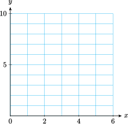
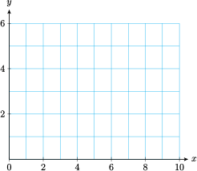

Section 6.3 Rational Exponents
Subsection Powers of the Form \(a^{m/n}\)
In the last section, we considered powers of the form \(a^{1/n}\text{,}\) such as \(x^{1/3}\) and \(x^{-1/4}\text{,}\) and saw that \(a^{1/n}\) is equivalent to the root \(\sqrt[n]{a}\text{.}\) What about other fractional exponents? What meaning can we attach to a power of the form \(a^{m /n}\text{?}\)
Consider the power \(x^{3/2}\text{.}\) Notice that the exponent \(\dfrac{3}{2}= 3(\dfrac{1}{2})\text{,}\) and thus by the third law of exponents, we can write
In other words, we can compute \(x^{3/2}\) by first taking the square root of \(x\) and then cubing the result. For example,
Checkpoint 6.49. QuickCheck 1.
A fractional exponent represents a power and a root. The denominator of the exponent is the root, and the numerator of the exponent is the power. We will define fractional powers only when the base is a positive number.
Rational Exponents.
To compute \(a^{m/n}\text{,}\) we can compute the \(n\)th root first, or the \(m\)th power, whichever is easier. For example,
or
Example 6.50.
- \(\displaystyle 81^{3/4} = \left(81^{1/4}\right)^3 = 3^3 = 27\)
- \(\displaystyle -27^{5/3} = -\left(27^{1/3}\right)^5 = -3^5 = -243\)
- \(\displaystyle 27^{-2/3} = \frac{1}{\left(27^{1/3}\right)^2} = \frac{1}{3^2}= \frac{1}{9}\)
- \(\displaystyle 5^{3/2} = \left(5^{1/2}\right)^3 \approx (2.236)^3 \approx 11.180\)
Note 6.51.
You can verify all the calculations in Example 6.50 on your calculator. For example, to evaluate \(81^{3/4}\text{,}\) key in
81 ^ ( 3 ÷ 4 ) ENTER
or simply
81 ^ 0.75 ENTER
Caution 6.52.
When computing \(81^{3/4}\) on a calculator, do not forget the parentheses around the exponent, \(\dfrac{3}{4}\text{.}\) The keying sequence
\(\qquad\qquad 81\) ^ \(3\) ÷ ENTER gives us the value of \(\dfrac{81^3}{4}\text{,}\) or \(132,860.25\text{.}\) The parentheses tell the calculator to include all of the quotient \(3 \div 4\) in the exponent, not just the 3.
Checkpoint 6.53. Practice 1.
Subsection Power Functions
Perhaps the single most useful piece of information a scientist can have about an animal is its metabolic rate. The metabolic rate is the amount of energy the animal uses per unit of time for its usual activities, including locomotion, growth, and reproduction.
The basal metabolic rate, or BMR, sometimes called the resting metabolic rate, is the minimum amount of energy the animal can expend in order to survive.
Example 6.54.
A revised form of Kleiber's rule states that the basal metabolic rate for many groups of animals is given by
where \(m\) is the mass of the animal in kilograms and the BMR is measured in kilocalories per day.
-
Calculate the BMR for various animals whose masses are given in the table.
Animal Bat Squirrel Raccoon Lynx Human Moose Rhinoceros Weight (kg) \(0.1\) \(0.6\) \(8\) \(30\) \(70\) \(360\) \(3500\) BMR (kcal/day) \(\) \(\) \(\) \(\) \(\) \(\) \(\) Sketch a graph of Kleiber’s rule for \(0 \lt m \le 400\text{.}\)
Do larger species eat more or less, relative to their body mass, than smaller ones?
-
We evaluate the function for the values of \(m\) given. For example, to calculate the BMR of a bat, we compute
\begin{equation*} B(0.1) = 70(0.1)^{0.75} = 12.4 \end{equation*}A bat expends, and hence must consume, at least 12 kilocalories per day. We evaluate the function to complete the rest of the table. The values of BMR are rounded to the nearest whole number.
Animal Bat Squirrel Raccoon Lynx Human Moose Rhinoceros Weight (kg) \(0.1\) \(0.6\) \(8\) \(30\) \(70\) \(360\) \(3500\) BMR (kcal/day) \(12\) \(48\) \(333\) \(897\) \(1694\) \(5785\) \(31,853\) -
We plot the data from the table to obtain the graph below.

If energy consumption were proportional to body weight, the graph would be a straight line. But this graph is concave down, or bends downward. Larger species eat less than smaller ones, relative to their body weight. For example, a moose weighs 600 times as much as a squirrel, but its energy requirement is only 121 times the squirrel's.
Checkpoint 6.55. QuickCheck 2.
Checkpoint 6.56. Practice 2.
Subsection Radical Notation
Because \(a^{1/n} = \sqrt[n]{a}\text{,}\) we can write any power with a fractional exponent in radical form as follows.
Rational Exponents and Radicals.
Example 6.57.
\(\displaystyle 125^{4/3} = \sqrt[3]{125^4} \text{ or } \left(\sqrt[3]{125}\right)^4\)
\(\displaystyle x^{0.4} = x^{2/5} = \sqrt[5]{x^2}\)
\(\displaystyle 6w^{-3/4} = \dfrac{6}{\sqrt[4]{w^3}}\)
Checkpoint 6.58. Practice 3.
Usually, we will want to convert from radical notation to fractional exponents, since exponential notation is easier to use.
Example 6.59.
\(\displaystyle \sqrt{x^5} = x^{5/2}\)
\(\displaystyle 5 \sqrt[4]{p^3} = 5p^{3/4}\)
\(\displaystyle \dfrac{3}{\sqrt[5]{t^2}}= 3t^{-2/5}\)
\(\displaystyle \sqrt[3]{2y^2} = \left(2y^2\right)^{1/3} = 2^{1/3} y^{2/3}\)
Checkpoint 6.60. Practice 4.
Checkpoint 6.61. QuickCheck 3.
Subsection Operations with Rational Exponents
Powers with rational exponents—positive, negative, or zero—obey the laws of exponents, which we discussed in Section 6.1. You may want to review those laws before studying the following examples.
Example 6.62.
- \begin{align*} \frac{7^{0.75}}{7^{0.5}}\amp= 7^{0.75-0.5} = 7^{0.25} \amp\amp \blert{\text{Apply the second law of exponents.}} \end{align*}
- \begin{align*} v \cdot v^{-2/3}\amp= v^{1+(-2/3)} \amp\amp \blert{\text{Apply the first law of exponents.}}\\ \amp = v^{1/3} \end{align*}
- \begin{align*} \left(x^8\right)^{0.5}\amp= x^{8(0.5))} = x^4 \amp\amp \blert{\text{Apply the third law of exponents.}} \end{align*}
- \begin{align*} \frac{\left(5^{1/2}y^2\right)^2}{\left(5^{2/3} y\right)^3} \amp= \frac{5y^4}{5^2 y^3} \amp\amp \blert{\text{Apply the fourth law of exponents.}}\\ \amp = \frac{y^{4-3}}{5^{2-1}}=\frac{y}{5} \amp\amp \blert{\text{Apply the second law of exponents.}} \end{align*}
Checkpoint 6.63. Practice 5.
Subsection Solving Equations
According to the third law of exponents, when we raise a power to another power, we multiply the exponents together. In particular, if the two exponents are reciprocals, then their product is \(1\text{.}\) For example,
This observation can help us to solve equations involving fractional exponents. For instance, to solve the equation
we raise both sides of the equation to the reciprocal power, \(3/2\text{.}\) This gives us
The solution is \(8\text{.}\)
Example 6.64.
Solve \(~~(2x + 1)^{3/4} = 27\)
We raise both sides of the equation to the reciprocal power, \(\dfrac{4}{3}\text{.}\)
Checkpoint 6.65. Practice 6.
Checkpoint 6.66. QuickCheck 3.
Exercises Problem Set 6.3
Warm Up
1.
Combining powers and roots
-
Start with 8, square it, and then take the cube root of the result. That is:
\begin{equation*} \sqrt[3]{8^2} = \sqrt[3]{?}= \end{equation*}Now start with 8, take the cube root, then square the result. That is:
\begin{equation*} (\sqrt[3]{8})^2 = (?)^2= \end{equation*} -
Do you get the same answers for parts (a) and (b)? You should! Now try the same thing with some irrational numbers. Use your calculator, and round your answers to two decimal places.
\begin{align*} \sqrt{3^5} \amp = \amp \amp (\sqrt{3})^5 = \\ (\sqrt[3]{58})^4\amp = \amp \amp \sqrt[3]{58^4}= \end{align*} -
Choose the most convenient order of operations to evaluate each root without using a calculator.
- \(\displaystyle \sqrt[5]{32^3}\)
- \(\displaystyle -\sqrt[3]{27^4}\)
2.
Using exponents
-
Simplify \((\sqrt[3]{8})^2\) using exponents as follows. Fill in the blanks with the correct exponents.
\begin{equation*} (\sqrt[3]{8})^2 = (8^{\underline{\hspace{0.909090909090909em}}})^2 = 8^{\underline{\hspace{0.909090909090909em}}} \end{equation*} - Use your calculator to compute \(8^{2/3}\text{.}\) Don't forget to put parentheses around the exponent.
-
Approximate each power to the nearest thousandth.
- \(\displaystyle 12^{5/6}\)
- \(\displaystyle \sqrt[3]{6^4}\)
- \(\displaystyle 37^{-2/3}\)
- \(\displaystyle 4.7^{2.3}\)
3.
Evaluate each root without using a calculator.\(\displaystyle \sqrt[4]{16y^{12}} \)
\(\displaystyle \sqrt[5]{243x^{10}}\)
\(\displaystyle \sqrt[3]{8x^9y^{27}} \)
\(\displaystyle -\sqrt[4]{81a^8b^{12}}\)
\(\displaystyle \sqrt[3]{64x^6 y^{18}}\)
\(\displaystyle -\sqrt[5]{32x^{25}y^{5}} \)
4.
Evaluate each power without using a calculator.
\(\displaystyle 81^{3/4} \)
\(\displaystyle 125^{2/3} \)
\(\displaystyle 625^{0.75} \)
\(\displaystyle 16^{-3/2} \)
\(\displaystyle 8^{-4/3} \)
\(\displaystyle 32^{-1.6} \)
Skills Practice
For Problems 5 and 6, write each power in radical form.
5.
\(\displaystyle y^{3/4} \)
\(\displaystyle a^{-2/7} \)
\(\displaystyle (st)^{-3/5} \)
6.
\(\displaystyle 5y^{2/3} \)
\(\displaystyle 6w^{-1.5} \)
\(\displaystyle -3x^{0.4}y^{0.6} \)
For Problems 7 and 8, write each expression with fractional exponents.
7.
\(\displaystyle \sqrt{y^3} \)
\(\displaystyle 6\sqrt[5]{(ab)^3} \)
\(\displaystyle \dfrac{-2n}{\sqrt[8]{q^{11}}} \)
8.
\(\displaystyle \sqrt[3]{ab^2} \)
\(\displaystyle \dfrac{5}{\sqrt[3]{y^2}} \)
\(\displaystyle \dfrac{S}{4\sqrt{VH^3}} \)
For Problems 9–14, simplify by applying the laws of exponents. Write your answers with positive exponents only.
9.
\(4a^{6/5}a^{4/5} \)10.
\((-2m^{2/3})^4 \)11.
\(\dfrac{8w^{9/4}}{2w^{3/4}} \)12.
\((-3u^{5/3}) (5u^{-2/3}) \)13.
\(\dfrac{k^{3/4}}{2k} \)14.
\(c^{-2/3}\left(\dfrac{2}{3}c^2 \right) \)For Problems 15–20, solve. Round your answers to the nearest thousandth if necessary.
15.
\(x^{2/3} - 1 = 15\)
16.
\(x^{-2/5} = 9\)
17.
\(6-2.4x^{-5/4} = 8 \)
18.
\(2(5.2 - x^{5/3}) = 1.4\)
19.
\(\dfrac{2}{3}(2y+1)^{0.2} = 6\)
20.
\(1.3w^{0.3} + 4.7 = 5.2\)
21.
If \(f (x) = (3x - 4)^{3/2}\text{,}\) find \(x\) so that \(f (x) = 27\text{.}\)
22.
If \(S(x) = 12x^{-5/4}\text{,}\) find \(x\) so that \(S(x) = 20\text{.}\)
For Problems 23–26, use the distributive law to find the product.
23.
\(x^{1/3} (2x^{2/3} - x^{1/3})\)24.
\(3y^{-3/8}\left(\dfrac{1}{4}y^{-1/4} + y^{3/4} \right)\)25.
\((2x^{1/4} + 1) (x^{1/4} - 1) \)26.
\((a^{3/4}-2)^2 \)For Problems 27–30, factor out the smallest power from each expression. Write your answers with positive exponents only.
27.
\(x^{3/2} + x = x(~~\text{?}~~)\)
28.
\(y^{3/4} - y^{-1/4} = y^{-1/4}(~~\text{?}~~)\)
29.
\(a^{1/3} + 3 - a^{-1/3} = a^{-1/3}(~~\text{?}~~)\)
30.
\(4b-6+4b^{-2/3} = 2b^{-2/3}(~~\text{?}~~)\)
31.
-
Complete the table of values, then graph both functions on the grid, along with the graph of \(y=x\text{.}\)
\begin{equation*} f(x) = x^{4/3},\quad g(x)=x^{3/2} \end{equation*}\(x\) \(0\) \(1\) \(2\) \(3\) \(4\) \(5\) \(6\) \(f(x)\) \(\qquad\) \(\qquad\) \(\qquad\) \(\qquad\) \(\qquad\) \(\qquad\) \(\qquad\) \(g(x)\) \(~~~\) \(~~~\) \(~~~\) \(~~~\) \(~~~\) \(~~~\) \(~~~\)  -
Check your work by graphing the functions in the suggested window, and compare the graphs.
\begin{align*} \text{Xmin} \amp = 0 \amp\amp \text{Xmax} = 6\\ \text{Ymin} \amp = 0 \amp\amp \text{Ymax} = 10 \end{align*}
32.
-
Complete the table of values, then graph both functions on the grid, along with the graph of \(y=x\text{.}\)
\begin{equation*} f(x) = x^{3/4}, \quad g(x)=x^{2/3} \end{equation*}\(x\) \(0\) \(2\) \(4\) \(6\) \(8\) \(10\) \(f(x)\) \(~~~\) \(~~~\) \(~~~\) \(~~~\) \(~~~\) \(~~~\) \(g(x)\) \(~~~\) \(~~~\) \(~~~\) \(~~~\) \(~~~\) \(~~~\)  -
Check your work by graphing the functions in the suggested window, and compare the graphs.
\begin{align*} \text{Xmin} \amp = 0 \amp\amp \text{Xmax} = 10\\ \text{Ymin} \amp = 0 \amp\amp \text{Ymax} = 4 \end{align*}
For Problems 33 and 34, solve the equations, and locate the corresponding points on the graphs in Problems 31 and 32.
33.
\(\displaystyle x^{4/3}=4 \)
\(\displaystyle x^{3/2}=6\)
34.
\(\displaystyle x^{3/4}=4 \)
\(\displaystyle x^{2/3}=6\)
Applications
35.
During a flu epidemic in a small town, health officials estimate that the number of people infected \(t\) days after the first case was discovered is given by
-
Complete the table of values.
\(t\) \(5\) \(10\) \(15\) \(20\) \(I(t)\) \(\) \(\) \(\) \(\) - How long will it be before 300 people are ill?
- Graph the function \(I(t)\) on your calculator, and verify your answer to part (b) on your graph.
36.
The research division of an advertising firm estimates that the number of people who have seen their ads \(t\) days after the campaign begins is given by the function
-
Complete the table of values.
\(t\) \(6\) \(10\) \(14\) \(20\) \(N(t)\) \(\) \(\) \(\) \(\) - How long will it be before 75,000 people have seen the ads?
- Graph the function \(n(t)\) on your calculator, and verify your answer to part (b) on your graph.
37.
In the 1970s, Jared Diamond studied the number of bird species on small islands near New Guinea. He found that larger islands support a larger number of different species, according to the formula
where \(S\) is the number of species on an island of area \(A\) square kilometers. (Source: Chapman and Reiss, 1992)
-
Fill in the table.
\(A\) \(10\) \(100\) \(1000\) \(5000\) \(10,000\) \(S\) \(\hphantom{000000} \) \(\hphantom{000000} \) \(\hphantom{000000} \) \(\hphantom{000000} \) \(\hphantom{000000} \) Graph the function on your calculator for \(0\lt A\le 10,000\text{.}\)
How many species of birds would you expect to find on Manus Island, with an area of 2100 square kilometers? On Lavongai, which bird's area is 1140 square kilometers?
How large must an island be in order to support 200 different species of bird?
38.
The climate of a region has a great influence on the types of animals that can survive there. Extreme temperatures create difficult living conditions, so the diversity of wildlife decreases as the annual temperature range increases. Along the west coast of North America, the number of species of mammals, \(M\text{,}\) is approximately related to the temperature range, \(R\text{,}\) (in degrees Celsius) by the function
(Source: Chapman and Reiss, 1992)
Graph the function for temperature ranges up to \(30\degree\)C.
How many species would you expect to find in a region where the temperature range is \(10\degree \)C? Label the corresponding point on your graph.
If 50 different species are found in a certain region, what temperature range would you expect the region to experience? Label the corresponding point on your graph.
Evaluate the function to find \(f(9)\text{,}\) \(f(10)\text{,}\) \(f(19)\text{,}\) and \(f(20)\text{.}\) What do these values represent? Calculate the change in the number of species as the temperature range increases from \(9\degree\)C to \(10\degree\)C and from \(19\degree\)C to \(20\degree\)C. Which \(1\degree\) increase results in a greater decrease in diversity? Explain your answer in terms of slopes on your graph.
39.
The table at right shows the exponent, \(p\text{,}\) in the allometric equation
for some variables related to mammals. (Source: Chapman and Reiss, 1992)
| Variable | Exponent, \(p\) |
| Home range size | \(1.26\) |
| Lung volume | \(1.02\) |
| Brain mass | \(0.70\) |
| Heart rate | \(-0.25\) |
The average body mass of a dolphin is about 140 kilograms, twice the body mass of an average human male. Using the allometric equation above, calculate the ratio of the brain mass of a dolphin to that of a human.
A good-sized brown bear weighs about 280 kilograms, twice the weight of a dolphin. Calculate the ratio of the brain mass of a brown bear to that of a dolphin.
Use a ratio to compare the heartbeat frequencies of a dolphin and a human, and those of a brown bear and a dolphin.
40.
A bicycle ergometer is used to measure the amount of power generated by a cyclist. The scatterplot shows how long an athlete was able to sustain variouslevels of power output. The curve is the graph of
which approximately models the data. (Source: Alexander, 1992)
- As represented by the graph, which variable is the input, and which is the output?
- The athlete maintained 650 watts of power for 40 seconds. What power output does the equation predict for 40 seconds?
- The athlete maintained 300 watts of power for 10 minutes. How long does the equation predict that power output can be maintained?
- In 1979 a remarkable pedal-powered aircraft called the Gossamer Albatross was successfully flown across the English Channel. The flight took 3 hours. According to the equation, what level of power can be maintained for 3 hours?
- The Gossamer Albatross needed 250 watts of power to keep it airborne. For how long can 250 watts be maintained, according to the equation?
41.
Birds’ eggs typically lose 10%–20% of their mass during incubation. The embryo metabolizes lipid during growth, and this process releases water vapor through the porous shell. The incubation time for birds’ eggs is a function of the mass of the egg and has been experimentally determined as
where \(m\) is measured in grams and \(I\) in days. (Source: Burton, 1998)
- Calculate the incubation time (to the nearest day) for the wren, whose eggs weigh about 2.5 grams, and the greylag goose, whose eggs weigh 46 grams.
- The rate of water loss from the egg is also a function of its mass and appears to follow the rule\begin{equation*} W(m) = 0.015 m^{0.742} \end{equation*}Combine the functions \(I(m)\) and \(W(m)\) to calculate the fraction of the initial egg mass that is lost during the entire incubation period.
- Explain why your result shows that most eggs lose about 18% of their mass during incubation.
42.
The incubation time for birds’ eggs is given by
where \(m\) is measured in grams and \(I\) in days. (See Problem 41.) Before hatching, the eggs take in oxygen at the rate of
in milliliters per day. (Source: Burton, 1998)
- Combine the functions \(I(m)\) and \(O(m)\) to calculate the total amount of oxygen taken in by the egg during its incubation.
- Use your result from part (a) to explain why total oxygen consumption per unit mass is approximately inversely proportional to incubation time. (Oxygen consumption is a reliable indicator of metabolic rate, and it is reasonable that incubation time should be inversely proportional to metabolic rate.)
- Predict the oxygen consumption per gram of a herring gull’s eggs, given that their incubation time is 26 days. (The actual value is 11 milliliters per day.)
43.
Kepler’s law gives a relation between the period, \(p\text{,}\) of a planet’s revolution and its average distance, \(a\text{,}\) from the Sun:
where \(K = 1.243 \times 10^{24}\text{,}\) \(a\) is measured in miles, and \(p\) is measured in years.
- Solve Kepler’s law for \(p\) in terms of \(a\text{.}\)
- Find the period of Mars if its average distance from the Sun is \(1.417 \times 10^8\) miles.
44.
Refer to Kepler's law, \(p^2=Ka^3\text{,}\) in Problem 43.
- Solve Kepler’s law for \(a\) in terms of \(p\text{.}\)
- The period of Venus is 0.615 years. Find the distance from Venus to the Sun.